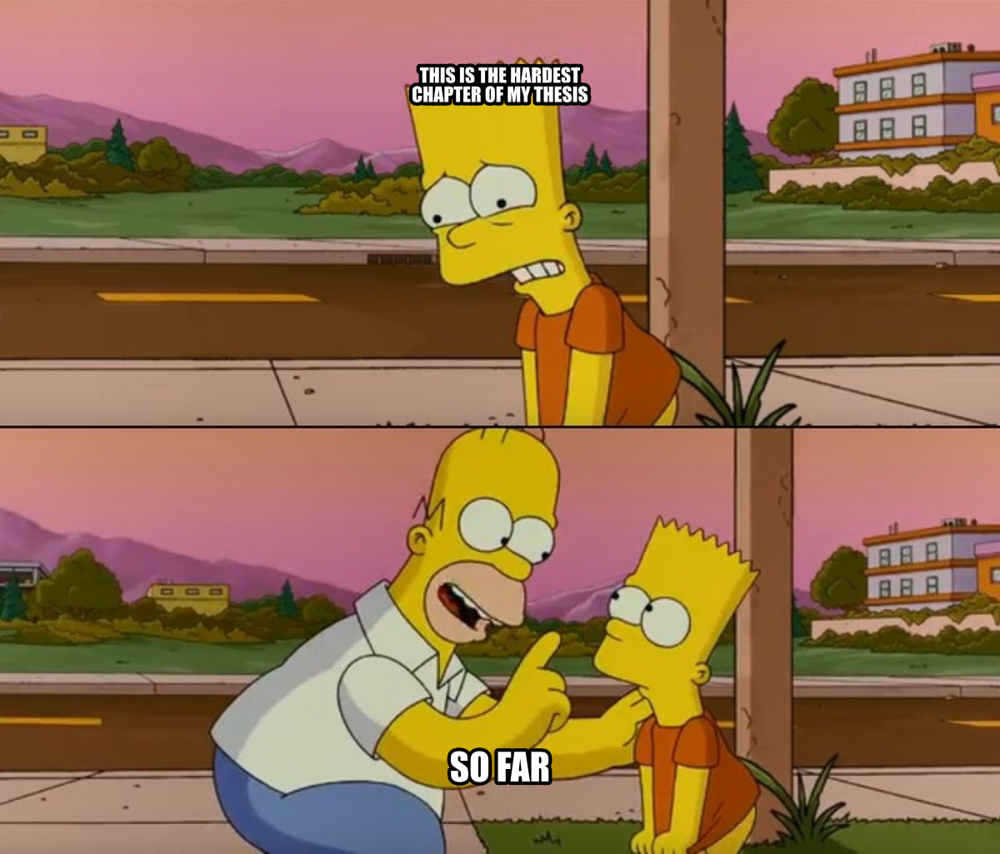

27 How to Write a Thesis
Prerequisites (read first if unfamiliar): Chapter 26, Chapter 30.
See also: Chapter 25, Chapter 28, Chapter 31, Chapter 29.
Purpose

A thesis is the longest single argument most people will ever write. An MS thesis is a hundred pages. A PhD dissertation is two to three hundred. Either way, it is a different kind of object from a paper — it is sustained, it is yours alone in a way a co-authored paper isn’t, and it has to be coherent across more text than you have ever produced before. The writing problems are different too. In a paper, you can keep the whole argument in your head. In a thesis, you cannot, and the project becomes about how to manage scale: how to outline at three levels, how to revise without losing the thread, how to integrate published or under-review papers into a unified narrative, how to work with a committee, and how to finish.
This chapter is for someone whose first thesis is on the horizon — an honors student in their senior year, a master’s student starting their second year, a PhD student moving toward a proposal. It does not cover the substance of thesis research; that is the work of your advisor, your committee, and your reading. It covers the meta-skill of how to write the thesis as a coherent document. It speaks generically about U.S. R1 PhD program norms and avoids university-specific policies — for those, talk to your program’s graduate coordinator.
Read this chapter alongside Chapter 26. The two share a great deal: both are exercises in writing a coherent argument for a critical reader. But a thesis is a bigger room with its own acoustics, and some of what works for a paper does not scale.
Learning objectives
By the end of this chapter, you should be able to:
Distinguish an MS thesis, a monograph PhD dissertation, and a three-paper PhD dissertation, and explain when each is appropriate.
Draft a thesis proposal that articulates a research question, situates it in the literature, and lays out a defensible plan and timeline.
Choose and work with a thesis committee, and understand the rhythms of comprehensive exams, proposal defenses, and final defenses.
Outline a long-form document at chapter, section, and paragraph granularity, and revise it without losing the thread.
Integrate published or under-review papers into a unified dissertation narrative.
Manage the emotional and logistical realities of long-form writing — drafting, feedback, revision, and finishing.
Running theme: a thesis is one argument, told once, at length, in your own voice
The temptation is to think of a thesis as a series of papers stapled together. Even when the dissertation contains three published papers, that is not what the thesis is. The thesis is one argument, and the papers are evidence for that argument. The introduction names it; the chapters develop it; the conclusion synthesizes it.
27.1 What a thesis is for
A thesis serves three audiences, each with different demands.
The committee is the gatekeeper. They have read it, they will sign off on it, they will sit at your defense. They want to be persuaded that you have done a coherent piece of work and that you can defend it.
Your future self is the second audience. You will look at this document in five or ten years and want to remember what you actually did and what you would do differently. The thesis is the most permanent record of a multi-year project, and the only one written from inside.
Your future readers — colleagues, students, hiring committees, the broader research community — are the third. Most of them will read only the introduction and a chapter or two. Make those sections worth their time.
These three audiences pull in slightly different directions. The committee wants completeness. Your future self wants honest record-keeping. Your future readers want compression. The compromise: write the introduction and conclusion for compression, the chapters for completeness, and the appendices for honesty.
27.2 Genres of thesis
Three forms dominate, and the choice between them shapes everything that follows.
MS thesis. Roughly fifty to a hundred pages, single coherent contribution, one or two research questions. An MS thesis is often a stepping stone — to a PhD, to industry research, to a portfolio piece. It is shorter than a PhD dissertation and shorter than most PhD students remember. The genre conventions of an MS thesis are closer to a long paper than to a monograph: introduction, methods, results, discussion, conclusion, with a literature review larger than a paper would carry.
Monograph PhD dissertation. A hundred-fifty to three hundred pages of sustained argument across chapters. Common in humanities and parts of social science. The strength of a monograph is depth — one big idea, developed across multiple chapters, each chapter doing rhetorical work. The risk is that none of the chapters become standalone publications, and you defend a thousand pages of work that nobody outside the committee will ever read.
Three-paper PhD dissertation. Increasingly common in HCI, information science, and computational social science. Three publishable manuscripts plus an introduction and a conclusion that frame them as a unified contribution. The strength is publishing throughput — you finish the dissertation with three papers in the pipeline. The weakness is coherence — if the three papers are too different, the framing introduction has to do enormous work to make them feel like one project.
The choice depends on your field, your advisor, and the kind of work you do. A computational thesis with three large empirical projects fits the three-paper form naturally. A theoretical thesis with one developing argument fits the monograph. Talk to your advisor early; the choice is not lightly reversible.
27.3 The proposal
Most PhD programs require a written proposal between coursework and the dissertation work. Master’s programs vary. The proposal is a thirty-to-sixty-page document that contains a literature review, the research questions, the methods, the timeline, an ethics or IRB plan if applicable, and a statement of expected contribution.
A useful framing: the proposal is the dissertation introduction, written before you have done the work. You will rewrite it later — many sentences will survive, many will not — but the act of writing it forces you to articulate what you don’t yet know. If you cannot state your research question in one sentence at proposal time, the next year of work will drift.
Pat Thomson’s blog has a long-running series on proposals (1) that is the most realistic short read on the genre. Joan Bolker’s Writing Your Dissertation in Fifteen Minutes a Day (2) is the standard companion on the writing side; Wendy Belcher’s twelve-week framework (cited in Chapter 26) translates to thesis-scale writing once you scale the units up.
27.4 The committee
The committee is the small group of faculty who supervise the thesis. The composition varies by program, but generic norms apply.
Your chair (often your advisor) is the primary supervisor. You meet with them most often; they read drafts most carefully; they shepherd the project through milestones. Their job is to push you toward a defensible thesis and to defend you at the moments when committee disagreement gets sharp.
The other members are usually two to four additional faculty. At least one is often from outside your department; they ensure the work is legible to a broader audience and they catch field-specific blind spots. Their reading is less continuous than the chair’s; they enter the project at proposal time and intensify their attention near the defense.
Two practical rules. Read committee feedback charitably. A comment that lands as harsh on a Tuesday morning may be entirely reasonable when you re-read it Wednesday afternoon. Manage conflicting feedback explicitly. When two committee members disagree about what you should do, escalate to your chair; do not pick one and ignore the other. The chair’s job is to mediate.
27.5 Comprehensive exams or qualifying exams
Most PhD programs have one. Formats vary widely — written exams, oral exams, paper portfolios, literature reading lists with synthesis essays. The exam usually serves as the gateway from coursework to the proposal. It is field-specific and program-specific; for the precise rules, ask your program’s graduate coordinator. The advice that generalizes: start preparing earlier than you think you need to, treat the reading list as a literature map (see Chapter 25), and ask former students of your program for their actual study materials.
27.6 Outlining and drafting at thesis scale
A thesis is too big to outline at one level. You need three levels at once.
The chapter level. A one-page table of contents with the title of each chapter, a one-sentence statement of what each chapter does, and the rough word count. This is your map. You will revise it many times; that is fine.
The section level. Within each chapter, an outline of the sections and their order. Section-level outlines are where the rhetorical structure of the chapter becomes visible — and where you discover, sometimes painfully, that two of your sections are actually saying the same thing.
The paragraph level. For the chapter you are currently drafting, a list of paragraphs with topic-sentence stubs. This is the level where your daily writing happens. A good day is a few topic-sentence stubs turned into paragraphs.
Anne Lamott’s “shitty first drafts” applies. A thesis chapter has to be drafted ugly and then revised. The most common failure mode is polishing the introduction of chapter one for two months and never writing chapter four. Set a daily writing target — Bolker’s fifteen minutes a day is real — and keep it.
A second failure mode: writing in inspiration sprints and then disappearing for weeks. Steady throughput beats heroic effort. Belcher and Bolker both make this case. Block protected mornings; treat the writing time as a meeting that doesn’t get rescheduled.
27.7 Integrating papers into a dissertation
For a three-paper dissertation, the integration is the work that turns three papers into one thesis.
The introduction is where the framing happens. It is not “here are three papers I wrote”; it is “here is one research question, and these three papers approach it from three angles.” Spend real time on this. The introduction is what your future readers will read, and the framing it establishes is what makes the thesis feel like a thesis.
Each paper-chapter typically gets a short preface — a paragraph or two — explaining where it was published (or is under review), how it relates to the others, and what the reader should know coming in. The body of each chapter is usually the paper itself, possibly with adjustments to figure numbers, cross-references, and notation to keep the thesis internally consistent.
The conclusion synthesizes across the three chapters. What did you learn that you could not have learned from any one paper alone? What is the contribution of the dissertation as a whole? Future work?
A monograph dissertation handles integration differently — the chapters are continuous, with no paper-shaped seams to hide. The introduction and conclusion still do framing, but the chapters are not standalone artifacts.
27.8 Revision and feedback cycles
The drafting-to-defense workflow has a characteristic shape. You draft a chapter; you give it to your advisor; you revise based on their feedback; you circulate to the committee at proposal or pre-defense; you revise based on their feedback; you defend; you revise once more.
Each cycle compresses. Advisor feedback on chapter one might run for months; committee feedback at the proposal might run for weeks; pre-defense revision is usually weeks; post-defense revision, days. Plan accordingly.
Track changes matters. Word’s track-changes mode works for circulating to committee members who don’t use git. LaTeX users can use latexdiff to produce a marked-up PDF showing changes between two versions; see Chapter 29. Git is the persistent record; see Chapter 31 for chapter-level branching strategies. Many students keep a dissertation/ repo with one chapter per file and use branches for major revisions.
The 80/20 rule: address most committee comments without argument. The few you choose to push back on, do so in a written response — even when the committee meeting is in person — so there is a record of what you decided and why.
27.9 The defense
The defense is mostly conversational. Your committee has read the document and has already decided whether to pass you; the defense is the formal occasion to confirm that decision and to surface the questions that didn’t fit on the page.
The public-talk component — the thirty-to-forty-five-minute presentation — is the visible part. See Chapter 28 for slide design and timing; the presenting chapter has a section specifically on defenses. The Q&A, often an hour or more, is where committee members ask the questions they care about. Surprises are rare if your advisor has done their job. Prepare for the questions you would ask if you were on the committee, and prepare for the question you most fear; that one is usually asked.
After the defense, the committee deliberates briefly and tells you the outcome. Most defenses pass with revisions. The revisions are usually minor and have a deadline.
27.10 Finishing
“Done is better than perfect.” This is the hardest part of a thesis to internalize. The dissertation is not the last thing you will ever write; it is one document, and finishing it is a discrete milestone. The Thesis Whisperer blog (3) is the most candid public voice on the emotional reality of finishing — read it.
Practical end-game logistics: institutional formatting requirements (margins, font, table of contents conventions); ProQuest deposit (4) for PhD dissertations; embargo decisions; institutional repository deposit. None of this is intellectual work. All of it has deadlines. Read your program’s formatting guide twice.
27.11 Stakes and politics
A thesis is a multi-year commitment to a single sustained argument, and the conditions under which someone can sustain it are not equally distributed.
Three things to notice. First, who can afford the time. A funded PhD with a teaching or research assistantship is a part-time wage in exchange for full-time scholarly labor, and the wage is set by the institution, not by the cost of living in its city. Students with caregiving obligations, debt, undocumented status, or chronic health conditions face a different calculation than students without those constraints, and “just take an extra year” is not a neutral piece of advice. The visible attrition statistics in PhD programs are downstream of an invisible filtering at admission, in advising, and in funding renewal. Second, advising is a power relationship. The advisor signs off on every milestone, writes every recommendation letter, and shapes the network the student will leave the program with. When the relationship works, the student flourishes; when it does not — through neglect, mismatch, or in the worst cases, harassment — the student often has no recourse short of starting over. Mental-health literature on graduate school documents elevated rates of depression and anxiety relative to comparable non-academic populations. Third, citation, attribution, and “the field” apply to theses too. Whose work you build on, whose names you canonize as the conversation, and whose contributions you credit in your acknowledgements all encode a position. See Chapter 26 for the related framing on authorship and citation.
See Chapter 8 for the broader framework. The concrete prompt to carry forward: when you plan a thesis, plan also for the conditions that make finishing possible — financial, relational, and emotional — and recognize that those conditions are unevenly distributed.
27.12 Worked examples
A three-paper dissertation outline
A hypothetical dissertation: “Governance on Volunteer-Run Online Platforms.” Three papers, framing introduction, conclusion.
Introduction (8–10k words). Frames the broader question — how do volunteer moderators on platforms like Reddit, Wikipedia, and Discord govern user behavior, and what changes when platforms shift policy from above? Sets up the three angles. Reviews the literature on online governance, content moderation, and volunteer labor. Names the three contributions.
Chapter 2 (Paper 1, published at CSCW 2025). A natural-experiment study of one subreddit before and after a moderation policy change. Method: difference-in-differences with a matched comparison community.
Chapter 3 (Paper 2, under review at New Media & Society). An interview study of twenty volunteer moderators across five platforms. Method: semi-structured interviews and reflexive thematic analysis.
Chapter 4 (Paper 3, in preparation). A computational analysis of the rule-text corpora from a thousand subreddits, looking at how rule complexity correlates with community size and turnover.
Conclusion (3–5k words). Synthesizes across the three chapters. Argues that volunteer moderation shows a characteristic pattern of escalation and burnout that quantitative analysis alone can document but cannot explain, that interview work alone can describe but cannot generalize, and that the three approaches together produce an account neither would alone. Future work.
The connective tissue is the framing introduction and the conclusion. Each chapter retains its standalone form (with a one-paragraph preface noting publication status) but reads as part of a single argument.
A 12-month proposal-to-defense timeline
| Month | Milestone |
|---|---|
| 1 | Draft proposal outline; share with advisor. |
| 2 | Draft proposal §1 (intro/literature). |
| 3 | Draft proposal §2 (method/timeline). |
| 4 | Circulate full proposal to committee; schedule proposal defense. |
| 5 | Proposal defense; revise per feedback. IRB submission if needed. |
| 6–9 | Data collection / analysis / Paper 3 work. |
| 10 | Draft chapter 4 (Paper 3); update introduction. |
| 11 | Circulate full dissertation to committee; schedule defense. |
| 12 | Defense; final revisions; deposit. |
This is aggressive — most students take longer, and that is normal. The shape is what matters: proposal early, data work in the long middle, defense and deposit at the end.
An advisor-feedback log entry
Your advisor has commented on a methods section: “I’m not convinced the interview sample is balanced. Why only women moderators?”
You disagree — the focus on women moderators is intentional and theoretically motivated. Your job is not to argue back; it is to record the decision and the reasoning, calmly, in writing.
Advisor feedback (2026-03-12): “Why only women moderators?”
My response: The all-women sample is intentional. Two reasons. First, the existing literature on volunteer moderation has focused largely on men’s experiences (cite Squirrell, Matias). The asymmetry in the literature is the reason for the asymmetry in the sample. Second, my interviews surfaced gendered patterns of harassment and emotional labor that are central to the contribution; a mixed sample would have diluted the analysis. I will revise §3.2 to make this rationale explicit. Discussed with advisor 2026-03-15: agreed on revised framing.
The point of the log is not to win the argument; it is to make the decision visible, defensible, and reviewable. When the committee or a reviewer raises the same question later, you have the answer ready.
27.13 Templates
A proposal outline:
# {Working dissertation title}
**Advisor:** {name}
**Committee:** {names}
**Target proposal defense:** {YYYY-MM-DD}
**Target final defense:** {YYYY-MM-DD}
## §1 Introduction (~3000 words)
- The phenomenon
- The gap
- The research questions
- Roadmap
## §2 Literature review (~6000 words)
- Theme A: ...
- Theme B: ...
- Theme C: ...
- Synthesis: the gap
## §3 Method (~4000 words)
- Study 1: ...
- Study 2: ...
- Study 3: ...
## §4 Timeline (~500 words + Gantt table)
...
## §5 Expected contribution and limitations (~1000 words)
...A chapter outline at three levels (paste at the top of chapter-N.md):
# Chapter N: {title}
## Section 1: {section title}
- Paragraph 1: {topic-sentence stub}
- Paragraph 2: {topic-sentence stub}
- ...
## Section 2: {section title}
- Paragraph 1: {topic-sentence stub}
- ...A committee-feedback tracker:
| Date | Source | Comment | Decision | Status |
|---|---|---|---|---|
| 2026-03-12 | Advisor | Sample skew? | Defended in §3.2 | Resolved |
| 2026-03-19 | R. Smith | Add formal analysis | Adding Appendix B | In progress |
| ... | ... | ... | ... | ... |27.14 Exercises
- Write a 250-word “contribution statement” for a hypothetical thesis project of your own. State the question, the approach, and the expected contribution.
- Find a recent PhD dissertation in your university’s institutional repository (in your subfield). Reverse-engineer its outline at chapter and section level. What kind of dissertation is it (MS, monograph, three-paper)? How does the introduction frame the chapters?
- Draft a committee-invitation email to a faculty member you would want on your committee. The email is short — one paragraph on the project, one paragraph on why you are asking them.
- Build a 12-month proposal-to-defense timeline for your own (real or hypothetical) thesis. Mark the dates of the proposal defense, the data-collection windows, and the final defense.
27.15 One-page checklist
- Did you choose the dissertation genre (MS / monograph / three-paper) intentionally and with your advisor?
- Is your research question stated in one sentence somewhere in the proposal?
- Is your committee assembled, and have you confirmed each member can serve?
- Are you outlining at three levels (chapter, section, paragraph)?
- Is your daily writing time blocked and protected?
- Are chapters under version control (see Chapter 31)?
- Are committee comments tracked in writing?
- Did you read your program’s formatting guide before the final-week scramble?
- Have you read about the emotional realities of finishing (Thesis Whisperer)?
27.16 Quick reference: thesis genres at a glance
| Genre | Length | Form | Strength | Risk |
|---|---|---|---|---|
| MS thesis | 50–100 pages | Single project | Stepping stone | Compressed scope |
| Monograph PhD | 150–300 pages | Single sustained argument | Depth | Chapters never publish |
| Three-paper PhD | 150–250 pages | Three papers + framing | Publishing throughput | Coherence |
- Joan Bolker, Writing Your Dissertation in Fifteen Minutes a Day (Henry Holt, 1998) — short, durable advice on building a daily writing habit; the title is the method.
- Peg Boyle Single, Demystifying Dissertation Writing (Stylus, 2009) — a research-backed protocol for outlining, drafting, and revising at thesis scale.
- Pat Thomson, patter — thesis category — long-running blog of practical advice from a PhD supervisor; especially good on revision and committee management.
- The Thesis Whisperer — Inger Mewburn’s blog and the most candid public voice on the emotional reality of finishing.
- Wendy Laura Belcher, Writing Your Journal Article in Twelve Weeks (2nd ed., 2019) — a paired resource for the three-paper-dissertation route, since each paper goes through the same workbook.
- Karen Kelsky, The Professor Is In — practical advice on the academic job market, advising relationships, and finishing strategy; especially useful when “what comes after the thesis?” needs to be planned.
- Teresa Evans et al., Evidence for a mental health crisis in graduate education (Nature Biotechnology, 2018) — the empirical backbone for the “Stakes and politics” framing above.